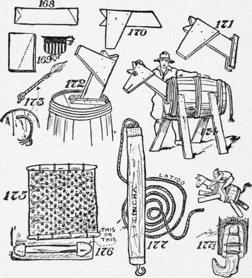

Packing Horses
Description
This section is from the book "The Book Of Camp-Lore And Woodcraft", by Dan Beard. Also available from Amazon: The Book of Camp-Lore and Woodcraft.
Packing Horses
If one is going on a real camping excursion where one will need pack horses, one should, by all means, familiarize oneself with the proper method of packing a pack horse. This can be done in one's own cellar, attic or woodshed and without hiring a horse or keeping one for the purpose. The horse will be expensive enough when one needs it on the trail.
The drill in packing a horse should be taught in all scout camps, and all girl camps and all Y. M. C. A. camps, and all training camps; in fact, every where where anybody goes outdoors at all, or where anybody pretends to go outdoors; and after the tenderfeet have learned how to pack then it is the proper time to learn what to pack; consequently we put packing before outfitting, not the cart, but the pack before the horse, so to speak.
When the Boy Scout Movement started in America it had the good aggressive American motto, "BE SURE YOU'RE RIGHT, THEN GO AHEAD," which was borrowed from that delightful old buckskin man, Davy Crockett.
A few years later, when the scout idea was taken up in England, the English changed the American motto to "BE PREPARED;" because the English Boy Scout promoter was a military man himself and saw the necessity of preparedness by Great Britain, which has since become apparent to us all.
And in order to be prepared to pack a horse, we must first be sure we are right, then "go ahead" and practice packing at home.
One of the most useful things to the outdoor person is a
Pack Horse
All of us do not own a horse, but there is not a reader of this book so poor that he cannot own the horse shown by Fig. 174.
There are but few people in the United States who cannot honestly come into possession of a barrel with which to build a pack horse or on which to practice throwing the diamond hitch. They can also find, somewhere, some pieces of board with which to make the legs of the horse, its neck and head.
Fig. 168 shows the neck-board, and the dotted lines show where to saw the head to get the right angle for the head and ears, with which the horse may hear. Fig. 169 shows the head-board, and the dotted line shows how to saw off one corner to give the proper shape to this Arabian steed's intelligent head-piece.
Fig. 170 shows how to nail the head on the neck. The nails may be procured by knocking them out of old boards; at least that is the way the writer supplied himself with nails. He does not remember ever asking his parents for money with which to buy nails, but if it is different nowadays, and if you do not feel economically inclined, and have the money, go to the shop and buy them. Also, under such circumstances, go to the lumber yard and purchase your boards.
Fig. 171 shows how to nail two cleats on the neck, and Fig. 172 shows how to nail these cleats onto the head of the barrel. If you find the barrel head so tough and elastic that a nail cannot be easily hammered in, use a gimlet and bore holes into the cleats and into the barrel head, and then fasten the cleats on with screws.
The tail of the nag is made out of an old piece of frayed rope (Fig. 173), with a knot tied in one end to prevent the tail from pulling out when it is pulled through a hole in the other end of the barrel (Fig. 173). The legs of the horse are made like those of a carpenter's wooden horse, of bits of plank or boards braced under the barrel by cross-pieces (Fig. 174).
Now you have a splendid horse! "One that will stand without hitching." It is kind and warranted not to buck, bite or kick, but nevertheless, when you are packing him remember that you are doing it in order to drill yourself to pack a real live horse, a horse that may really buck, bite and kick.
There are a lot of words in the English language not to be found in the dictionary. I remember a few years ago when one could not find "undershirt" or "catboat" in the dictionary. But in the dictionaries of to-day you will even find "aparejo" and "latigo," although neither of these words was in the dictionaries of yesterday.
Continue to: